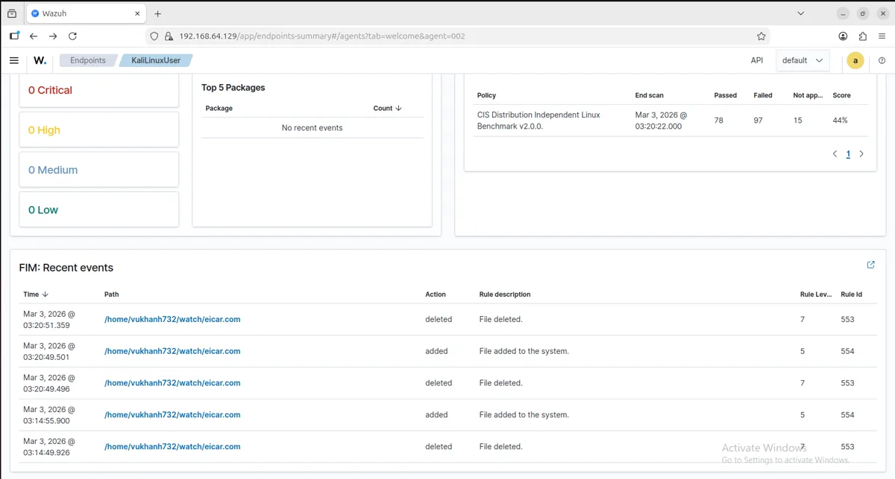

Problems worth solving. Working code, evidence, and what I am still
improving.
Personal product · redesign in progress
BrainTrain
Make a short practice session part of a longer story.
Standalone games forget you when a round ends. I built
BrainTrain so a player can return to saved progress, adaptive
difficulty, ranked tiers and insights across six games.
Working result
One session-recording path updates scores, streaks, rankings
and insights together. A completed round carries through to
the player's next visit.
Real-world use
A free web app for someone who wants short, repeatable games
and a history of their own results.
Evidence
Unit-tested scoring and analytics, plus browser/backend
checks against a real Supabase project. Elo history is
replayed from recorded sessions.
Still improving
The redesign is not published yet. The screenshot and case
study show the earlier released version.
Previously published version. The redesigned app is not
published yet.
Turn a trail of suspicious requests into something worth
investigating.
A failed SSH login says little on its own. SentryNode groups
repeated failures inside a time window, checks web payloads for
attack patterns, and adds IP-reputation context for triage.
Receive logs
Run detection rules
Enrich the alert
Return results
Working result
The live FastAPI slice accepts structured events and produces
alerts. Redis reduces repeated threat-intelligence lookups,
with fallback handling when the cache or external service is
unavailable.
Real-world use
The first part of a small monitoring pipeline: flag patterns
in SSH and web logs before a person investigates the
underlying events.
Evidence
A deployed API, unit/integration tests, input validation,
rate limits and payload caps. The source documents the
request path.
Still improving
The demo holds state in memory and resets on redeploy.
RabbitMQ, Elasticsearch and dashboards are provisioned
locally but are not connected to the live request path yet.
Follow a suspicious file all the way from detection to
containment.
I joined Windows, Ubuntu and Kali endpoints to one Wazuh
manager, then connected file-integrity events to VirusTotal
enrichment and an Active Response quarantine action.
File changes
Inspect its hash
Match an alert
Quarantine
Working result
In the controlled lab, a matching threat-intelligence alert
can move a file into quarantine automatically. The detection
event and response are visible together in the manager.
Real-world use
Practice the hand-off between endpoint visibility,
investigation and response, instead of stopping at a
dashboard full of alerts.
Evidence
Agent inventory, MITRE ATT&CK views, FIM screenshots and
a documented EICAR test workflow with reproducible commands.
Still improving
The next step is exercising noisier events and failed
response actions. Current evidence comes from three
endpoints in a VMware home lab.

Actual file-integrity events from the existing lab.
Give a security finding a clear consequence in the release
process.
A scan report is easy to ignore. Gatekeeper connects Python code
and dependency checks to an explicit build decision, then
packages the findings into a readable remediation dashboard.
Code changes
Scan
Apply policy
Review evidence
Working result
HIGH Bandit findings and reported Safety dependency
vulnerabilities fail the gate. MEDIUM Bandit findings remain
visible without blocking. ZAP adds dynamic-scan evidence
rather than deciding the gate.
Real-world use
A repeatable release check for a Python repository, with a
policy reviewers can read and findings they can act on.
Evidence
The repository records a pass on flask-login with no HIGH
findings and a fail on the deliberately vulnerable demo with
one HIGH finding.
Still improving
Report parsing and scanner-error handling need hardening:
missing or invalid reports can currently be treated as empty
results. This needs to fail safely before production use.
I build software, get curious about how it breaks, and make time for a
game.
I'm a Software Developer at Cybercore Solutions and a UNSW Computer
Science graduate. I build products end to end, then go deep on how
they fail and how to detect it.
My security work spans detection engineering, identity and Microsoft
security, and DevSecOps automation. Everything shown here is my own
build, lab, or authorised training.
What I work with
Python, TypeScript, Next.js, FastAPI, PostgreSQL, and Supabase for
building products. Wazuh, Elasticsearch, and Redis for detection.
Entra ID, Intune, Docker, GitHub Actions, and OWASP ZAP for securing
platforms and delivery.
Outside the day job
CTF competitions keep my offensive tooling and defensive mental
models current. At the UNSW Computer Science Society, I led a small
hackathon team from idea to working prototype under a tight
deadline.
Off the clock
Badminton, poker, games, and fitness. The desk is for the work; the
court, gym and card room share a hobbies hall through the study
door. Have a look around, or stay for a quick game.
Explore at your own pace, or open Projects and get straight to the
work.
Move
Click the Hobbies sign or navigation to enter the hall. Court, Gym
and Card room move around that shared space. Click the computer to
use the portfolio desktop.
Look around
Hold and drag to orbit the desk. Arrow keys also rotate the view
when the room has focus. Scroll over the room or use + / − to
zoom. Mouse look turns cursor movement on or off. Home resets the
view. Reduced motion starts with mouse look off.
Interact
Open the drawer, pick up the cup or textbook, or nudge the plant.
Hold and drag a picked-up object to turn it in 3D; its arrow
controls work too. Desk objects provides the same controls by
keyboard or touch. Put back or Escape ends an inspection. Click
the computer to reach its desktop; header shortcuts open the work
directly.
Reset
Use Home to return to the desk. Minimize apps to the taskbar, drag
restored windows by the title bar, or maximize them for reading.
Leave a game
Closing an activity opened from the room returns you to that view,
including your zoom. Back to the room or Escape also returns you
there. Apps opened inside the computer close to its desktop.
Minimizing pauses badminton until you choose Resume.
A personal place, with a little help from generous asset creators.
Retro desk artwork · Henry HeffernanBase desk, computer, chair, plant and baked lighting, adapted
under the MIT license. Typing samples and quiet office ambience
also come from the same MIT source. Vu's drawer, books, palette
and interactions are custom additions.Original license ↗